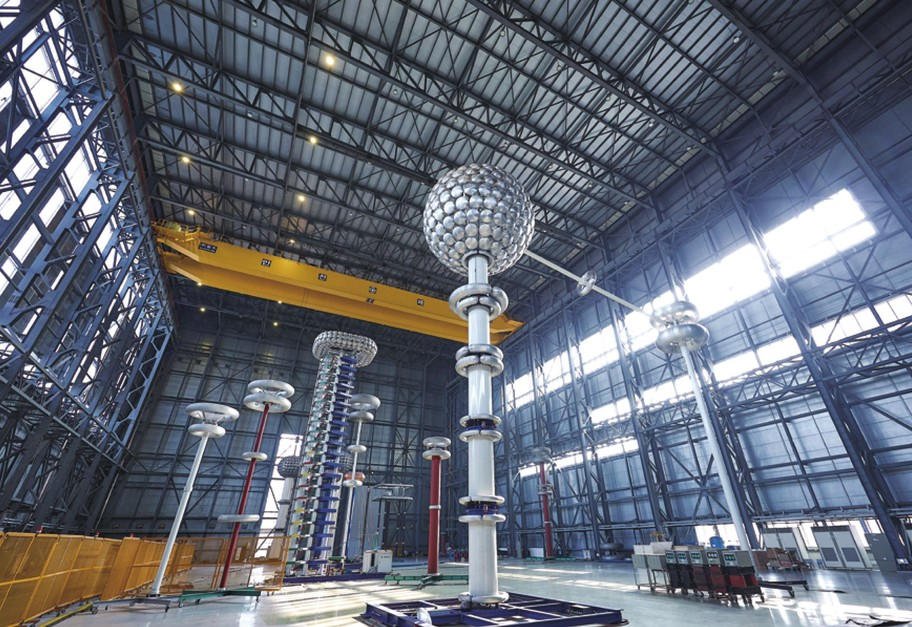
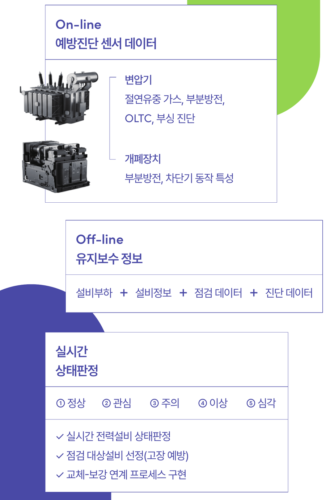
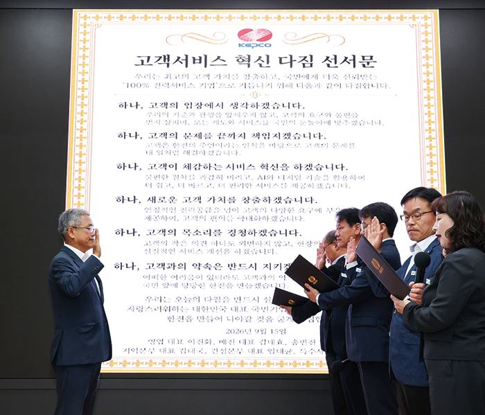
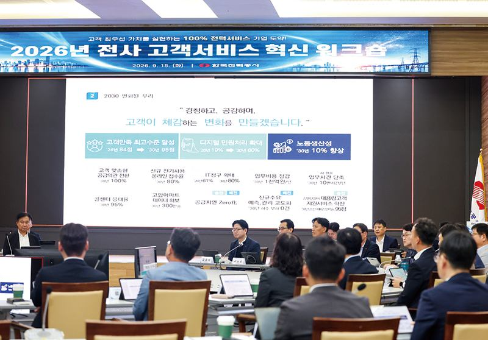
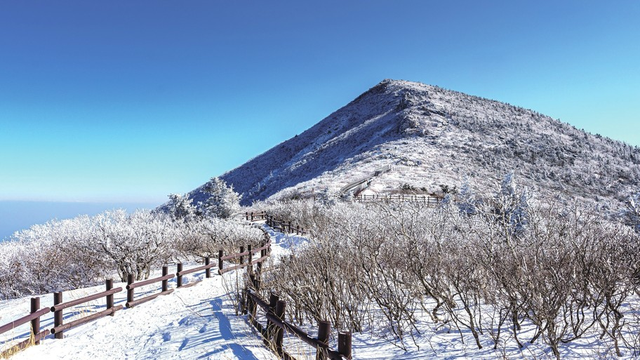

Component Guide
이미지 박스 — 1칸 · 2칸 · 3칸
기사 원고 파일(src/content/articles/코너.mjs)의 body 배열에 아래 코드를 붙여 넣고 node src/build.mjs를 실행하면 됩니다. 사진은 assets/images/2026-10/에 넣고, 원본은 tools/optimize-images.ps1로 줄여 주세요.
01
1칸 · 본문 폭 · 16:9
가장 기본형. cols와 ratio를 생략하면 이 모양이 됩니다.

{
type: 'images',
cols: 1,
items: [
{
src: 'on-site/01_hvdc_test_hall',
alt: '은색 구형 전극을 얹은 시험 설비들이 늘어선 HVDC 실증시험장 내부',
caption: '사진 한 장에 붙는 캡션.',
},
],
},02
1칸 · 넓게(1040px)
현장감 있는 풍경·행사 사진을 크게 보여줄 때. wide: true

{
type: 'images',
cols: 1,
wide: true,
items: [
{ src: 'travel-mate/02_lake_yeongnangho', alt: '눈 덮인 설악산 연봉 아래 펼쳐진 영랑호', caption: '넓은 사진의 캡션.' },
],
},03
1칸 · 원본 비율
도표·인포그래픽처럼 잘리면 안 되는 이미지. ratio: 'natural'

{
type: 'images',
cols: 1,
ratio: 'natural',
items: [
{
src: 'next-wave/02_seda_diagram_infographic.png',
alt: '센서 데이터와 유지보수 정보가 실시간 상태판정으로 이어지는 SEDA 구조도',
caption: '도표는 원본 비율 그대로.',
},
],
},04
2칸 · 4:5
2칸 기본형. 자동으로 넓게(1040px) 배치됩니다. 사진마다 캡션을 달 수 있습니다.


{
type: 'images',
cols: 2,
items: [
{ src: 'refresh/02_climbing_shoes', alt: '매트 위에 놓인 닳은 클라이밍 슈즈와 장비', caption: '왼쪽 사진 캡션.' },
{
src: 'refresh/04_team_photo_sitting',
alt: '클라이밍 벽 앞에 나란히 앉아 웃는 직원 네 명',
caption: '오른쪽 사진 캡션.',
},
],
},05
2칸 · 1:1 · 공통 캡션
정사각형으로 맞추고, 두 장을 묶는 캡션 하나만 달 때. ratio: '1:1' + caption


{
type: 'images',
cols: 2,
ratio: '1:1',
items: [
{ src: 'issue-now/oath', alt: '직원 대표들이 고객서비스 혁신 다짐 선서문을 읽고 있다' },
{ src: 'issue-now/session', alt: '워크숍 화면 앞에서 참석자들이 발표를 듣고 있다' },
],
caption: '두 장을 묶는 공통 캡션.',
},06
3칸 · 4:5
3칸 기본형. 모바일에서는 첫 장이 16:9로 크게, 나머지 두 장이 나란히 놓입니다.


{
type: 'images',
cols: 3,
items: [
{
src: 'travel-mate/03_sea_yeonggeumjeong',
alt: '해 질 녘 바닷가 바위 위의 영금정 정자',
caption: '첫째 캡션.',
position: '30% 50%',
},
{ src: 'travel-mate/04_village_abai_village', alt: '아바이마을 앞 물길을 건너는 갯배', caption: '둘째 캡션.' },
{ src: 'travel-mate/01_mountain_seoraksan', alt: '나뭇가지 사이로 보이는 설악산 바위 봉우리', caption: '셋째 캡션.' },
],
},07
3칸 · 16:9 · 공통 캡션
가로 사진 세 장을 한 줄로. ratio: '16:9'

{
type: 'images',
cols: 3,
ratio: '16:9',
items: [
{ src: 'travel-mate/04_village_abai_village', alt: '아바이마을 앞 물길을 건너는 갯배' },
{ src: 'travel-mate/00_hero_seoraksan_16x9', alt: '상고대가 핀 설악산 산책로' },
{ src: 'travel-mate/03_sea_yeonggeumjeong', alt: '해 질 녘 영금정과 바다' },
],
caption: '세 장을 묶는 공통 캡션.',
},08
자리 잡기 · 사진 없이
사진이 아직 없을 때. items를 비우거나 src를 빼면 칸 수만큼 회색 박스가 놓입니다.
{ type: 'images', cols: 3, caption: '사진이 들어오면 items에 src와 alt를 채웁니다.' },